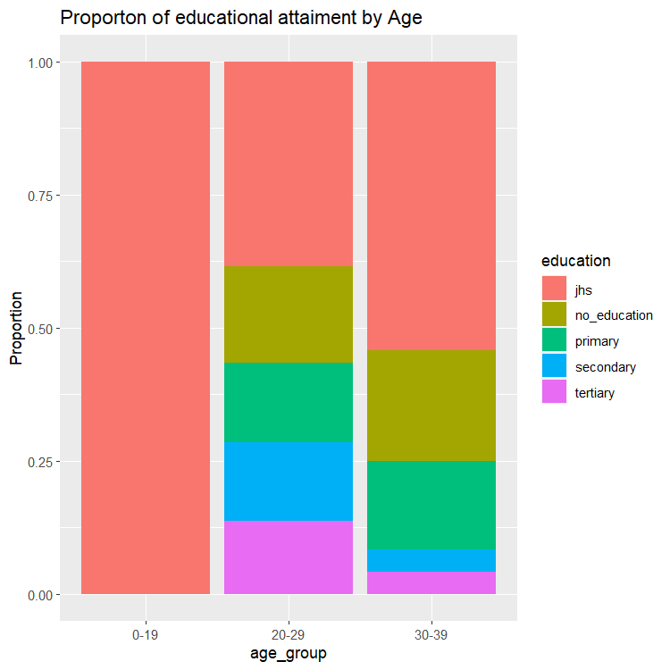
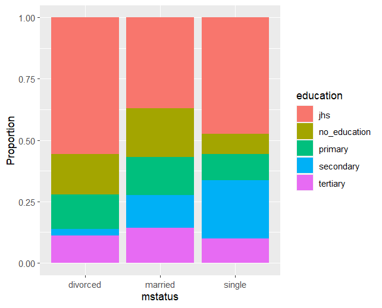
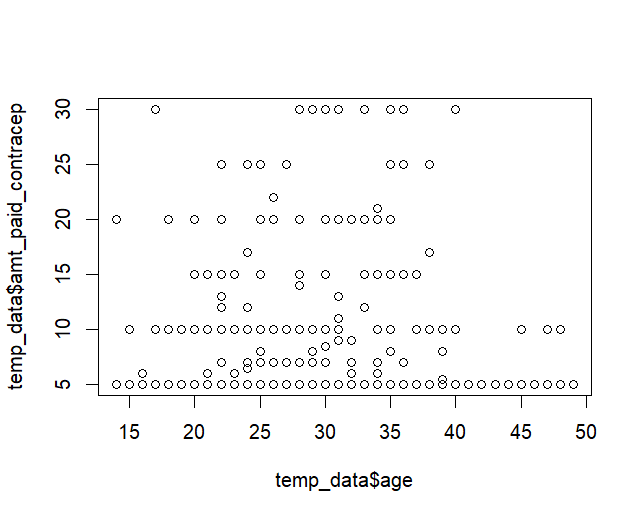

<<<<<<< HEAD
=======
Family Planning Access in Ghana: Data visualization project
>>>>>>> d46be19c8325594b53b20c9738945e15e545517a
Article
Family Planning Access in Ghana: Data visualization project
Improving access to family planning services and contraceptive uptake in low-middle-income countries are topical public health concerns.
Experts believe that access to modern contraceptives in LIMICs could reduce the problem of unmet needs, and avert over 54 million unwanted pregnancies and 26 million abortions worldwide each year [1,2].
However, the projection of achieving 65% global coverage is yet to be realized [1].
Notwithstanding this, there is a huge gap to fill as family planning services uptake is progressively slow and Ghana is not an exception [3,4].
Improvements in family planning services in Ghana over the years are yet to match up with the global population. The Ghana population policy targeted contraceptive prevalence to at least 50% by the year 2020 [5],
but this vision seems to be far from being real as the current contraceptive rate is still over around 26% among married women[6]. Experts believed that solving this unmet need could lead to important health dividends by of way averting the over 54% intended pregnancies and 23% abortions in Ghana [7,8].



Additional Graphs
>
Educational level of women by age
Educational level by Rural-Urban distribution
<<<<<<< HEAD
=======
>>>>>>> d46be19c8325594b53b20c9738945e15e545517a